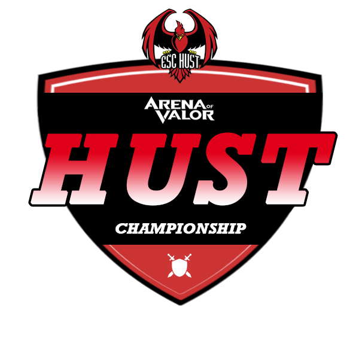

CÂU LẠC BỘ THỂ THAO ĐIỆN TỬ TRƯỜNG ĐẠI HỌC BÁCH KHOA HÀ NỘI
BAN TỔ CHỨC GIẢI LIÊN QUÂN SINH VIÊN BÁCH KHOA 2019
***
ĐIỀU LỆ GIẢI
Những vấn đề phát sinh ngoài điều lệ giải, BTC sẽ dựa trên tình thần giải đấu cũng như tính công bằng giữa các đội để giải quyết. Trong trường hợp đó, quyết định của BTC là quyết định cuối cùng!
ĐIỀU 1: TÊN GỌI – LOGO - MỤC ĐÍCH - Ý NGHĨA
1. Tên gọi:
- - Tên đầy đủ: Giải Liên quân Sinh viên Bách Khoa 2019
- - Tên tiếng anh: Arena of Valor HUST Championships 2019
- - Tên tiếng anh: Arena of Valor HUST Championships 2019
2. Logo giải đấu:
3. Mục đích, ý nghĩa:
- - Nhằm tạo sân chơi bổ ích, lành mạnh cho các bạn sinh viên Bách Khoa sau những giờ học căng thẳng, là nơi giao lưu, gắn kết giữa sinh viên với nhau trong cùng một lớp, một viện hay một trường.
- - Đây là giải đấu dành cho sinh viên Bách Khoa, đại học do Câu lạc bộ Thể thao điện tử Trường Đại học Bách khoa Hà Nội (ESC HUST) tổ chức. Đội vô địch sẽ là đội tuyển đại diện chính thức cho Liên quân Mobile Bách Khoa, được CLB bảo trợ tham dự các giải đấu lớn hơn cấp các Trường Đại học, Cao đẳng.
ĐIỀU 2: ĐỐI TƯỢNG THAM DỰ GIẢI
1. Đối tượng
- - Sinh viên Bách khoa (Trường Đại học Bách khoa Hà Nội và Cao đẳng nghề Bách khoa) và sinh viên trường ngoài (tối đa 2 sinh viên trường ngoài trên 1 team 7 người).
2. Điều kiện tham dự
Các đội đều phải hoàn tất đăng ký hợp lệ theo quy định và biểu mẫu được cung cấp trong bài viết công bố giải đấu của ESC HUST: https://fb.com/HUST.EsportsClub/
3. Đơn vị thi đấu
Đội được xem là có đủ điều kiện nếu đáp ứng đầy đủ các yêu cầu sau:
Đội có tối thiểu 05 thành viên và tối đa 07 thành viên là sinh viên hiện đang học tập tại các Trường đại học, Cao đẳng trên cả nước. Trong đó bắt buộc phải có tối thiểu 5 sinh viên Bách khoa.
Các thành viên phải có giấy tờ có ảnh để chứng minh mình là sinh viên: thẻ sinh viên, giấy chứng nhận sinh viên tạm thời
ĐIỀU 3: CƠ CẤU GIẢI THƯỞNG
(đang cập nhật)
ĐIỀU 4: THỜI GIAN - ĐỊA ĐIỂM THI ĐẤU
1. Thời gian
- - Vòng bảng: 28/9/2019
- - Vòng 1/16 và Tứ kết: 29/9/2019
- - Vòng Bán kết: 05/10/2019
- - Vòng Chung kết: 06/10/2019
- - BTC sẽ livestream các trận đấu đáng chú ý ở vòng bảng, vòng 1/16 và Tứ kết. Bán kết và Chung kết sẽ livestream tất cả các trận.
2. Địa điểm thi đấu
Các đội thi đấu tại địa điểm do BTC quy định ( Viruss coffee, 389 Trần Đại Nghĩa) dưới sự giám sát của BTC
ĐIỀU 5: THỂ THỨC THI ĐẤU - LUẬT THI ĐẤU
1 Thể thức thi đấu
1.1 Hình thức thi đấu: tùy theo từng vòng thi đấu.
1.2 Bản đồ: Bình nguyên vô tận.
1.3 Chế độ: Tùy chọn - Đấu giải: mỗi bên cấm 4 tướng.
1.4 Thể thức giải đấu:
1.5. Phiên bản: Theo quy định của BTC
1.6. Tài khoản thi đấu: Sử dụng tài khoản cá nhân theo đúng thông tin đăng kí với BTC
1.7. Phương tiện thi đấu: Sử dụng điện thoại cá nhân để thi đấu.
2. Luật thi đấu
Áp dụng luật thi đấu chính thức của bộ môn TTĐT Liên Quân Mobile bổ sung thêm các quy định dưới đây:
2.1 Các đội phải cung cấp đầy đủ những thông tin được yêu cầu để chuẩn bị cho công tác tổ chức. Nếu việc chậm trễ này làm ảnh hưởng đến công tác tổ chức, BTC có quyền loại đội vi phạm ra khỏi giải đấu và thay thế bằng đội khác.
2.2 Trong suốt quá trình thi đấu, các đội không được phép thay đổi tên đội, tên viết tắt và logo.
2.3 Việc thay đổi tên tài khoản thi đấu không thông qua sự đồng ý của BTC được xem như vi phạm.
2.4 Tối thiểu 05 thành viên của đội tham gia thi đấu phải mặc trang phục lịch sự và có mặt ở địa điểm thi đấu chỉ định trước 30 phút so với thời gian trận đấu bắt đầu. Các đội có mặt từ 30 phút cho đến 15 phút trước thời gian bắt đầu trận đấu hoặc không đủ 5 thành viên khi bắt đầu thi đấu đều được xem là vi phạm. Có mặt từ 14 phút trước thời gian bắt đầu trận đấu, đội bị xem là bỏ cuộc.
2.5 Các đội thay đổi VĐV từ chính thức sang dự bị và từ dự bị sang chính thức phải thông báo cho BTC, việc thay đổi thành viên không đúng theo danh sách đăng kí sẽ bị xử thua và loại khỏi giải đấu. Thay đổi thành viên không thông báo cho BTC có thể xem là vi phạm.
2.6 Các đội có thành viên liên quan các hoạt động cày thuê, gian lận xếp hạng sẽ bị hủy toàn bộ giải thưởng và thành tích của đội tại giải đấu.
2.7 Các đội không được phép tự ý bỏ cuộc hay rời trận đấu trừ những trường hợp đặc biệt do BTC cho phép như sau:
Lý do khách quan: Thiên tai, hỏa hoạn, cúp điện diện rộng,...
2.8 Thành viên thuộc đội mặc trang phục có hình ảnh của trò chơi không phải Liên Quân Mobile và cạnh tranh trực tiếp với Liên Quân Mobile sẽ bị loại khỏi giải đấu.
3 Hình phạt
3.1 Nếu đội tuyển không tham gia được trận đấu vì những lý do không chính đáng Xử thua, loại khỏi giải đấu.
3.2 VĐV gây tổn hại thiết bị tại khu vực thi đấu của BTC tùy tính chất sự việc: Phạt tiền bằng giá trị thiết bị tại thời điểm gây hư hại.
3.3 Vi phạm quy định trang phục thi đấu: Loại khỏi giải đấu.
3.4 Đội có thành viên liên quan đến các hoạt động cày thuê và gian lận xếp hạng: Loại khỏi giải đấu và tước bỏ toàn bộ giải thưởng
4. Trọng tài và giám sát
4.1 Tất cả trọng tài và giám sát giải đấu do Câu lạc bộ Thể thao điện tử Trường Đại học Bách khoa Hà Nội chỉ định.
4.2 Giám sát đội thi đấu sẽ có mặt tại nơi thi đấu để bảo đảm đội hình thi đấu chính thức trùng với đội hình thi đấu đã đăng ký với BTC và có quyền hạn xử lý tình huống, sự cố tương tự như trọng tài điều khiển trận đấu.
5. Cách tính điểm (vòng bảng)
5.1 Thắng 2đ, hòa 1đ, thua 0đ.
5.2 Nếu xảy ra trường hợp 2 đội hoặc nhiều hơn 2 đội bằng điểm nhau tại vòng bảng. Thứ hạng của các đội sẽ được quyết định bằng những tiêu chí sau (ưu tiên theo thứ tự):
Thành tích đối đầu giữa các đội.
Hiệu số thắng thua ở các trận đối đầu giữa các đội.
Tổng số trụ phá được ở trận đối đầu giữa các đội.
Vòng đấu phụ.
5.2.1 Vòng đấu phụ giữa 2 đội sẽ quyết định bằng trận đấu Bo1.
6. Quy định về việc cung cấp giấy tờ cần thiết cho BTC
Các đội khi đến thi đấu yêu cầu cung cấp giấy tờ có ảnh chứng minh bản thân là sinh viên. Đội vô địch cung cấp giấy tờ cần thiết cho CLB khi làm thủ tục thi đấu tại các giải đấu lớn hơn.
Mọi thắc mắc về giải đấu này các bạn có thể liên lạc với BTC qua fanpage https://www.facebook.com/HUST.EsportsClub/ hoặc SĐT 0348998135 (Mr.Hiếu)